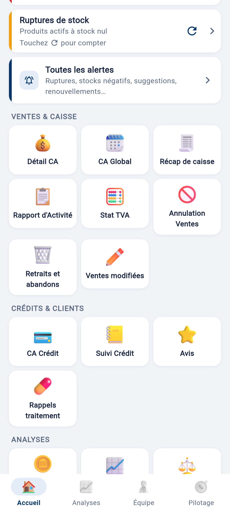
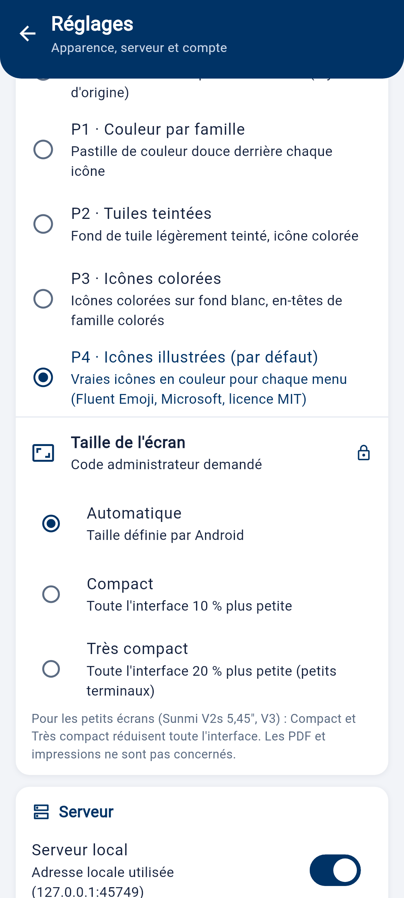
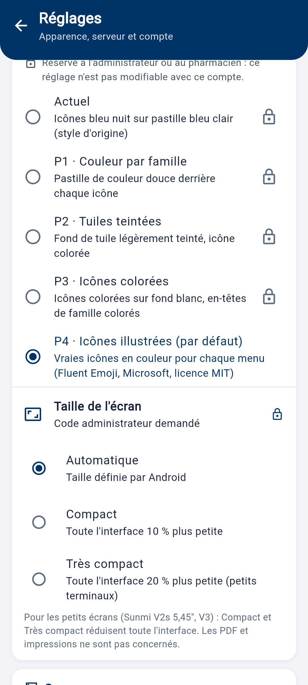

Affichage par défaut

P4, tout sur une page

P4

P4, tout sur une page

P4
Réglage « Style des icônes » (visible)

Modifiable, P4 marqué « par défaut »

Visible, verrouillé, avec l'explication
Décision du pharmacien : « je veux les 3 [dispositions] mais paramétrables, avec par défaut l'affichage P4_1_accueil ». Sans choix mémorisé : icônes illustrées (P4) et menus sur une page. Un style choisi auparavant est gardé.


